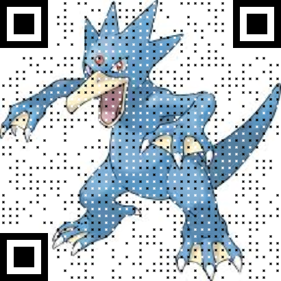
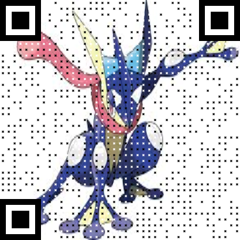

Les parallèles entre l'Océan et le Corps Humain
Le Système Circulatoire et les Courants Océaniques

Le Système Nerveux et les Signaux Sous-marins
La Respiration et l'Exchange Gazeux dans l'Océan

Le Système Digestif et les Nutriments sous-marins
X